Tectonics.js

Deep Dive:
Physically Based Rendering
Inspiration


High School
- Science Fiction
- Interstellar Rocketry
- Speculative Biology
- World Building
- Sim Earth
- Programming
Idea: make a scientifically accurate sim earth for modern hardware
Grad School

- Ecology and Evolutionary Biology
- Computer Models
Idea: stop thinking about it and just do it

- PyTectonics
Deep Dive
How do we quickly estimate average temperature on a planet?


Requirements:
- Any location
- Any point in time
- Any timestep length
- Any stable stellar system
- In under 10ms
Deep Dive
Conclusions:
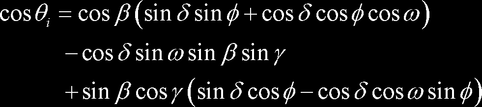- must work in general case: closed form solution for earth won't suffice
- must work fast: "on-rails" orbital mechanics
- potentially ergodic: sample multiple positions when timestep is large and average between them
- possible gold plating: avoid precision issues, allow sampling from any reference frame ("Anti-Kraken" clause)


Deep Dive
Visualizing the problem
Defining a Common Data Type and Algebra
Defining Data Structures
 
| Orbits | ||||||
|---|---|---|---|---|---|---|
| a | e | i | ω | Ω | ν | |
| A | ||||||
| B | . . . | |||||
| D | ||||||
| Orbits | ||||||
|---|---|---|---|---|---|---|
| a | e | i | ω | Ω | M | |
| A | ||||||
| B | . . . | |||||
| D | ||||||
| Orbits | ||||||
|---|---|---|---|---|---|---|
| a | e | i | ω | Ω | ||
| A | ||||||
| B | . . . | |||||
| D | ||||||
| Spins | ||||||
|---|---|---|---|---|---|---|
| ω | ε | ϕ | ||||
| C | ||||||
| E | . . . | |||||
| Spins | ||||||
|---|---|---|---|---|---|---|
| ω | ε | |||||
| C | ||||||
| E | . . . | |||||
| Phases | ||||||
|---|---|---|---|---|---|---|
| ϕ | ||||||
| A | ||||||
| B | ||||||
| C | . . . | |||||
| D | ||||||
| E | ||||||
Thanks